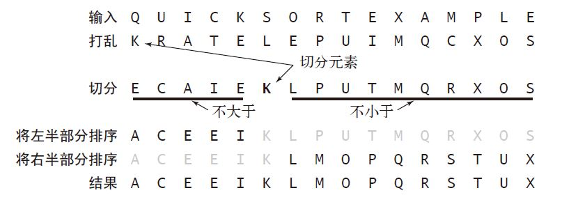
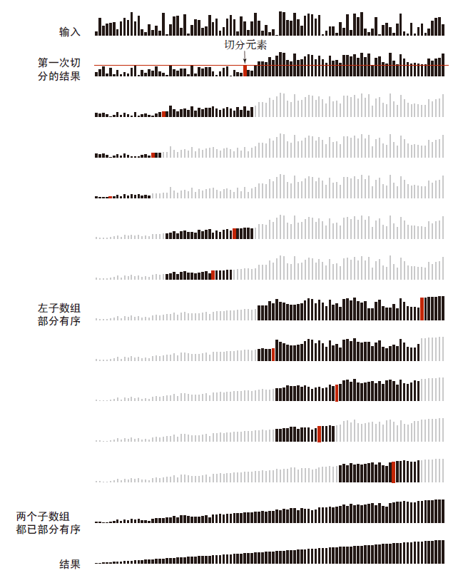

快速排序算法得到了十分广泛的应用，原因在于它具有在时间和空间上的双重优点——它是原地排序算法，所需的时间与$Nlog（N）$成正比。它的实现比较脆弱，脆弱的含义是一旦不小心性能会变得非常糟糕。
基本算法
基本的思想是分而治之。
快速排序是一种分治的排序算法。它将一个数组分成两个子数组，将两部分独立地排序。快速排序和归并排序是互补的：归并排序将数组分成两个子数组分别排序，并将有序的子数组归并以将整个数组排序；而快速排序将数组排序的方式则是当两个子数组都有序时整个数组也就自然有序了。在第一种情况中，递归调用发生在处理整个数组之前；在第二种情况中，递归调用发生在处理整个数组之后。
在归并排序中，一个数组被等分为两半；在快速排序中，切分（partition）的位置取决于数组的内容。

1 | public class Quick |
打乱数组—>切分—>分别排序
快速排序的切分
切分策略是快速排序算法的核心
一般策略是先随意地取a[lo] 作为切分元素，即那个将会被排定的元素，然后我们从数组的左端开始向右扫描直到找到一个大于等于它的元素，再从数组的右端开始向左扫描直到找到一个小于等于它的元素。这两个元素显然是没有排定的，因此我们交换它们的位置。如此继续，我们就可以保证左指针i 的左侧元素都不大于切分元素，右指针j 的右侧元素都不小于切分元素。当两个指针相遇时，我们只需要将切分元素a[lo] 和左子数组最右侧的元素（a[j]）交换然后返回j 即可
1 | private static int partition(Comparable[] a, int lo, int hi) |
性能改进
切换到插入排序
在快速排序开始的时候，判断如果数组长度小于某个值则将算法切换为插入排序。
1 |
|
三取样切分
改进快速排序性能的第二个办法是使用子数组的一小部分元素的中位数来切分数组。这样做得到的切分更好，但代价是需要计算中位数。人们发现将取样大小设为3 并用大小居中的元素切分的效果最好。我们还可以将取样元素放在数组末尾作为“哨兵”来去掉partition() 中的数组边界测试。使用三取样切分的快速排序轨迹如图
